Introduction to Digital Signal Processing
Part 4
Control Theory Concepts
Control Theory is a subfield of engineering and mathematics that analyzes the effects and interactions of dynamic systems and deals with them to achieve a desired objective.
They are divided into three groups:
- Classical Control Theory
- Modern Control Theory
- Robust Control Theory
Control Theory Concepts
- System
- Combination of elements that act together and perform a specific objective.
- Plant
- It refers to the system that you want to control.
- Control
- It is the aggregate a system that modifies the control variable with respect to a desired value, through an indication coming from the control signal or manipulated variable .
Control Theory Concepts
There are two common kinds of control systems:
| Open loop |
|
|---|---|
| Closed loop |
|
Control Theory Concepts
The theory of modern control is based on the description of a system in terms of n first order differential equations , where they interact:
- $ u $
- - Input variables
- $ y $
- - Output variables
- $ x $
- - State variables
- $ t $
- - Time
Control Theory Concepts
We can write this as:
$$ \left\{\begin{aligned} \mathbf{\dot{x}}_{(t)} &= \mathbf{f}_{(\mathbf{x},\mathbf{u},t)} \\ \mathbf{y}_{(t)} &= \mathbf{g}_{(\mathbf{x},\mathbf{u},t)} \end{aligned} \right. $$
The Plant is modeled in the State-space as:
$$ \left\{\begin{aligned} \dot{\mathbf{x}}_{(t)} &= A \mathbf{x}_{(t)} + B \mathbf{u}_{(t)} \\ \mathbf{y}_{(t)} &= C \mathbf{x}_{(t)} + D \mathbf{u}_{(t)} \end{aligned} \right. $$
Control Theory Concepts
In Continuous Time the Laplace Transform is used:
$$ \left\{\begin{aligned} s\mathbf{X}_{(s)} &= A \mathbf{X}_{(s)} + B \mathbf{U}_{(s)} \\ \mathbf{Y}_{(s)} &= C \mathbf{X}_{(s)} + D \mathbf{U}_{(s)} \end{aligned} \right. $$
In Discrete Time the Transformed Z is used:
$$ \left\{\begin{aligned} \mathbf{x}_{[k+1]} &= A \mathbf{x}_{[k]} + B \mathbf{u}_{[k]} \\ \mathbf{y}_{[k]} &= C \mathbf{x}_{[k]} + D \mathbf{u}_{[k]} \end{aligned} \right. $$
Control Theory Concepts

$\color{magenta}{\mathbf{x}_{(t)}} \,$ is the State Vector
$\color{magenta}{\mathbf{y}_{(t)}} \,$ is the Output Vector
$\color{magenta}{\mathbf{u}_{(t)}} \,$ is the Control Vector
$\color{darkgoldenrod}{\mathbf{A}_{(t)}} $ is the State Matrix
$\color{darkgoldenrod}{\mathbf{B}_{(t)}} $ is the Input Matrix
$\color{darkgoldenrod}{\mathbf{C}_{(t)}} $ is the Ouput Matrix
$\color{darkgoldenrod}{\mathbf{D}_{(t)}} $ is the Direct Transmition Matrix
Control Theory Concepts
Adding the feedback and assuming it is a LTI system , we are left with:
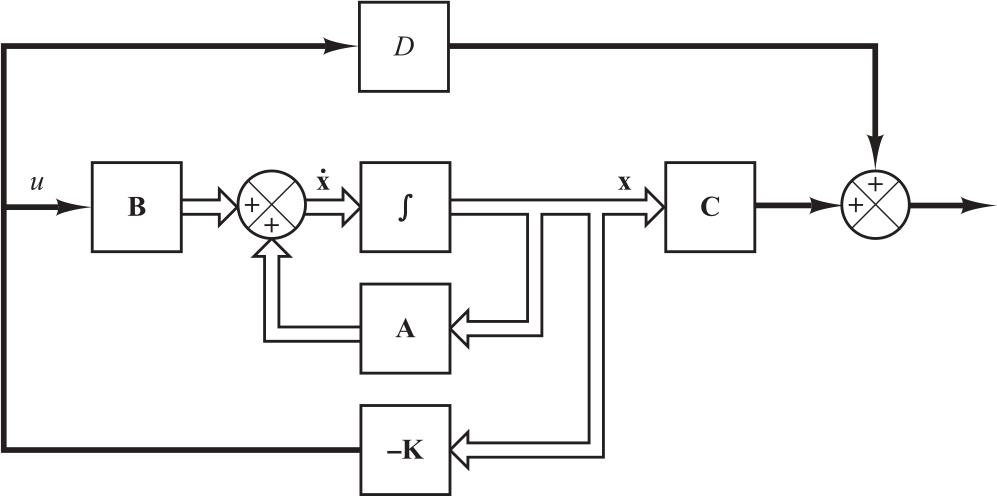where $\color{darkgoldenrod}{\mathbf{K}} $ is the feedback array
Control Theory Concepts
Being:
$$ \mathbf{u} = - K \mathbf{x}$$
We can write this as:
$$ \left\{ \begin{aligned} \mathbf{x}_{[k+1]} &= (A - BK) \mathbf{x}_{[k]} \\ \mathbf{y}_{[k]} &= C \mathbf{x}_{[k]} + D \mathbf{u}_{[k]} \end{aligned} \right. $$
Control Theory Concepts
There are cases where not all state variables are available for feedback.
This is solved with state observers.
Control Theory Concepts
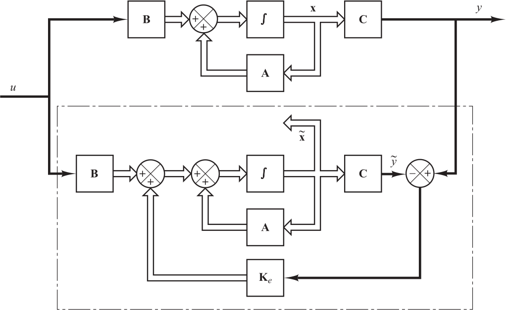$$ \left\{ \begin{aligned} \mathbf{\tilde{x}}_{[k+1]} &= A \mathbf{\tilde{x}}_{[k]} + B \mathbf{u}_{[k]} + \color{magenta}{K_e} (y_{[k]} - \color{magenta}{C\mathbf{\tilde{x}}_{[k]}}) \\ \mathbf{x}_{[k+1]} &= A \mathbf{x}_{[k]} + B \mathbf{u}_{[k]} \\ \mathbf{y}_{[k]} &= C \mathbf{x}_{[k]} \end{aligned} \right. $$
Control Theory Concepts
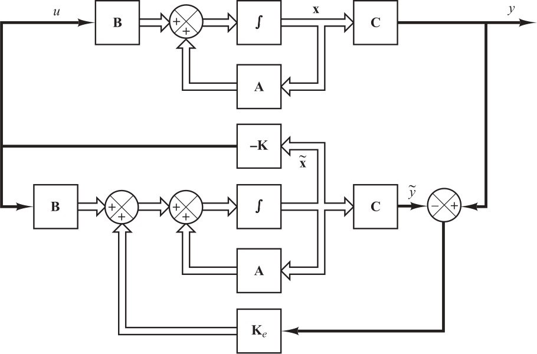$$ \left\{ \begin{aligned} \mathbf{x}_{[k+1]} &= (A -BK)\mathbf{x}_{[k]} + B K \color{magenta}{(\mathbf{x}_{[k]}-\mathbf{\tilde{x}}_{[k]})} \\ \mathbf{y}_{[k]} &= C \mathbf{x}_{[k]} \end{aligned} \right. $$
Bayesian filters
Deterministic models are not enough for 3 main reasons:
- No mathematical model is perfect.
- In every model there are disturbances that can not be modeled deterministically.
- The sensors are not perfect.
Bayesian filters
What happens if we add noise to the system?
$$ \left\{\begin{aligned} \mathbf{\dot{x}}_{(t)} &= \mathbf{f}_{(\mathbf{x},\mathbf{u},\mathbf{\omega},t)} \\ \mathbf{y}_{(t)} &= \mathbf{g}_{(\mathbf{x},\mathbf{u},\mathbf{\nu},t)} \end{aligned} \right. $$
We must define the problem as a Stochastic Process
Bayesian filters - MM
A Markov Model (MM) process of first order , only depends on previous status .
$$ p\left( x_k|x_{k-1},x_{k-2},\dots,x_{0} \right) = p\left( x_k|x_{k-1} \right) $$
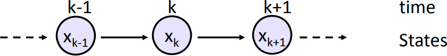Bayesian filters - HMM
When the state is not directly observable , it must be obtained indirectly. This model is known as Hidden Markov Model (HMM)
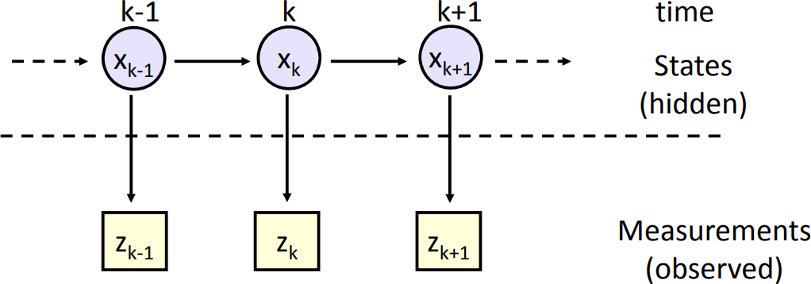Bayesian filters - HMM
The measurement in the kth time step depends only on the current state:
$$ p({\textbf {z}}_{k}|{\textbf {x}}_{k},{\textbf {x}}_{{k-1}},\dots ,{\textbf {x}}_{{0}})=p({\textbf {z}}_{k}|{\textbf {x}}_{{k}}) $$
Bayesian filters - HMM
Adding the entry of our system we have:
$$ \begin{aligned} \mathbf{\dot{x}}_{(t)} &= \mathbf{f}_{(\mathbf{x},\mathbf{u},\mathbf{\omega},t)} \quad \color{magenta}{\text{state equation}} \\ \mathbf{y}_{(t)} &= \mathbf{g}_{(\mathbf{x},\mathbf{u},\mathbf{\nu},t)} \quad \color{magenta}{\text{measurment equation}} \end{aligned} $$
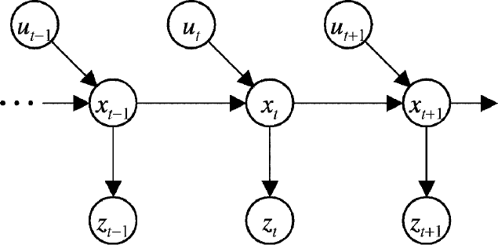Bayesian filters - HMM
We seek to find out:
$$ p \left( \mathbf{x}_k | \mathbf{y}_{1:k},\mathbf{u}_{1:k} \right)$$
Working on this equation we come to:
$$ \underbrace { p \left( \mathbf{x}_k | \mathbf{y}_{1:k},\mathbf{u}_{1:k} \right) } _{\color{magenta}{\text{posterior probability}}} = \frac{ \overbrace{ p\left({\mathbf{y}}_{k}|{\mathbf{x}}_{{k}}\right)}^{\color{magenta}{\text{measurment model}}} \overbrace{ p\left(\mathbf{x}_k|\mathbf{y}_{1:k-1}, \mathbf{u}_{1:k}\right)}^{\color{magenta}{\text{prior probability}}} } { \underbrace {p\left(\mathbf{y}_k|\mathbf{y}_{1:k-1}\right)}_{\color{magenta}{\text{normalization}}} } $$
Bayesian filters
Where:
- Standardization factor
- $$ p\left(\textbf{y}_k|\textbf{y}_{1:k-1}\right) = \int p\left(\textbf{y}_k|\textbf{x}_k\right) p\left( \textbf{x}_k|\textbf{y}_{1:k-1}\right) d\textbf{x}_k $$
- A priori probability
- $$ p\left(\textbf {x}_k|\textbf {y}_{1:k-1}, \textbf{u}_{1:k}\right) = \int p\left(\textbf{x}_k|\textbf{x}_{k-1}, \textbf{u}_k \right) \underbrace{p\left(\textbf{x}_{k-1} | \textbf{y}_{1:k-1},\textbf{u}_{1:k-1} \right)}_{\color{magenta}{\text{previous posterior}}} d\textbf{x}_{k-1} $$
Bayesian filters - Recursive
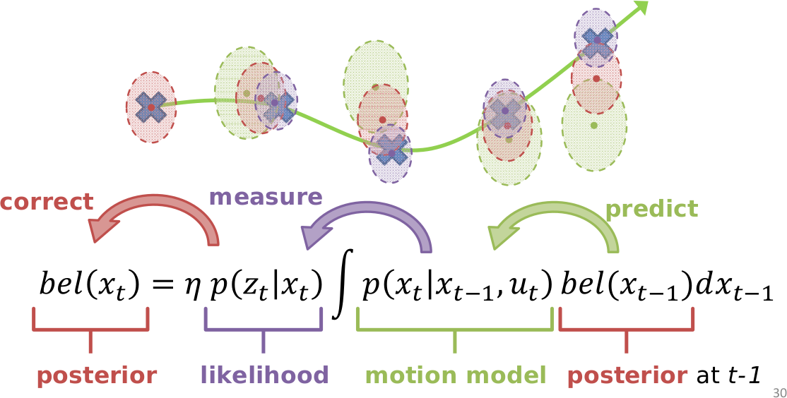Bayesian Filter - Example
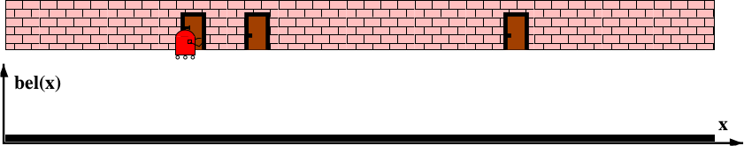For this case, we start in a state of total uncertainty (uniform distribution).
$$ p_{(x)} = \frac{1}{A} \quad A \gt 0$$
where A is the length of our universe.
Bayesian Filter - Example

We take a measurement with our sensor and update our knowledge according to:
$$ bel(x) = n \cdot p(y_k|x_k) \cdot \overline{bel}(x_k)$$
Bayesian Filter - Example
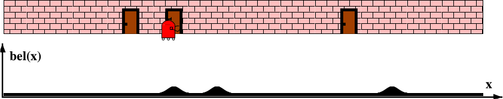Then the robot moves
$$ \overline{bel}(x_k) = \int p \left( \textbf{x}_k | \textbf{x}_{k-1} \right) bel(x_{k-1}) d\textbf{x}_{k-1} $$
Bayesian Filter - Example
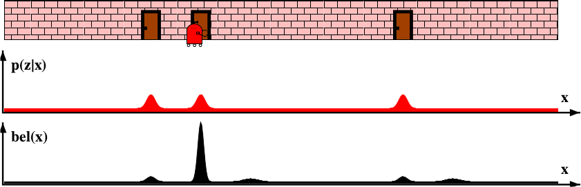We measure again
$$ bel(x) = n \cdot p(y_k|x_k) \cdot \overline{bel}(x_k)$$
Bayesian Filter - Example
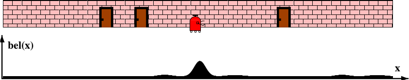We move again
$$ \overline{bel}(x_k) = \int p \left( \textbf{x}_k | \textbf{x}_{k-1} \right) bel(x_{k-1}) d\textbf{x}_{k-1} $$
Kalman filter
It is a recursive algorithm developed by Rudolf E. Kalman in 1960 that allows to obtain the best estimator of the hidden state of a linear dynamic system, when this is subjected to additive white noise, minimizing the mean square error.
Kalman Filter - Conditions
The Kalman filter is a Bayesian filter but it restricts the problem in 3 conditions:
- It must be a linear model.
- The system and measurement noise should be:
- Independents
- Additives
- White
- Gaussians
Kalman Filter - Conditions
- Linear system
- $$ T_{[\alpha x + \beta y]} = \alpha T_{[x]} + \beta T_{[y]}$$
- White noise
- $$ {S_x}_{(\tau)} = S_0 \delta_{(\tau)} \Longrightarrow {S_x}_{(\omega)} = S_0 $$
- Gaussian noise
- $$ {f_\mathbf{x}}_{(x_1,\cdots,x_n)} =\frac{1}{\sqrt{(2\pi)^n |\Sigma|}} e^{-\frac{1}{2} (\mathbf{x} - \mathbf{\mu})^T \Sigma^{-1} (\mathbf{x} - \mathbf{\mu})} $$
Kalman Filter - Model
Then, we can write the problem as:
$$ \left\{ \begin{aligned} \mathbf{x}_{[k+1]} &= A \mathbf{x}_{[k]} + B \mathbf{u}_{[k]} + \color{magenta}{\omega_{[k]}} \\ \mathbf{y}_{[k]} &= C \mathbf{x}_{[k]} + \color{magenta}{\nu_{[k]}} \end{aligned} \right. $$
With:
$$ \begin{aligned} p_{(\omega)} &\sim \mathcal{N}_{(0,Q)} \\ p_{(\nu)} &\sim \mathcal{N}_{(0,R)} \end{aligned} $$
Kalman filter - Equations
$$ \hat{x}_k = \underbrace{A \hat{x}_{k-1} + B u_k}_{\color{magenta}{\hat{x}_k^-}} + K_k (y_k - C (\underbrace{A \hat{x}_{k-1} + B u_k}_{\color{magenta}{\hat{x}_k^-}} )) $$
where:
$$ \begin{aligned} \hat{x}_k^- &\text{ is the probability a } \color{darkgoldenrod}{\text{priori}} \\ \hat{x}_k &\text{ is the probability a } \color{darkgoldenrod}{\text{posteriori}} \end{aligned} $$
Kalman filter - Equations
Kalman filter - Explanation
Since Kalman requires that the distributions be Gaussian $\mathcal{N}_{(0,\sigma)}$, we will have to:
1- The prior estimate:
$$ p(\hat{x}_k^-) = \int p (x_k | x_{k-1}) \; p(\hat{x}_{k-1}) \; dx_{k-1} $$
which is a convolution between two Gaussians.
Movement Model We lose information!
Kalman filter - Explanation
2- The posterior estimate:
$$ p(\hat{x}_k) \propto p(y_k | x_k) \cdot p(\hat{x}_k^-)$$
it is a multiplication between Gaussians.
Observation Model We gain information!
Kalman filter - Explanation
Working on the Observation Model above, we see that if we call:
$$ p(\hat{x}_k) = f_{(x)} \cdot g_{(x)} $$
we have left:
$$ p(\hat{x}_k) = \frac {1}{\sigma_f {\sqrt {2\pi }}} e^{-{\frac {1}{2}}\left({\frac {x-\mu_f }{\sigma_f }}\right)^{2}} \cdot \frac {1}{\sigma_g {\sqrt {2\pi }}} e^{-{\frac {1}{2}}\left({\frac {x-\mu_g }{\sigma_g }}\right)^{2}} $$
Kalman filter - Explanation
We obtain:
$$ bel(x) = \frac {S_{fg}} {\sigma_{fg} {\sqrt {2\pi }}} \; e^{-{\frac {1}{2}}\left({\frac {x-\mu_{fg} }{\sigma_{fg} }}\right)^{2}} $$
That is, a new Gaussian where:
$$ \mu_{fg} = \frac{\mu_f \sigma_g^2 + \mu_g \sigma_f^2}{\sigma_f^2 + \sigma_g^2} \qquad \sigma_{fg}^2 = \frac{\sigma_f^2 \sigma_g^2}{\sigma_f^2 + \sigma_g^2}$$
Kalman filter - Explanation
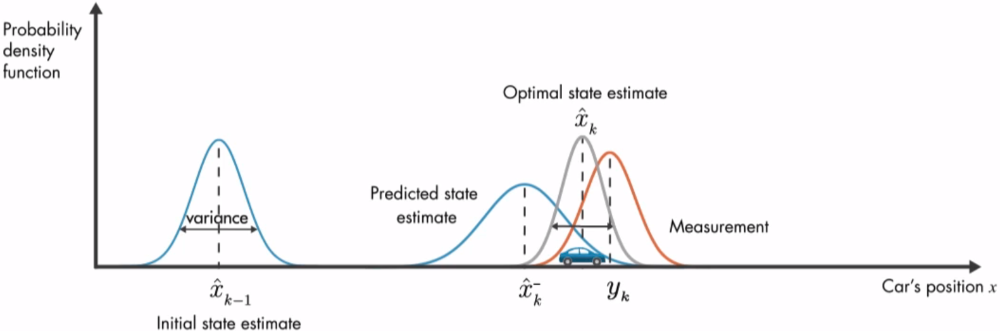Kalman filter - Applications
There are many applications, but it is mainly used for:
- Tracking objects
- Economy
- Navigation
- Artificial vision
- Fusion of sensors